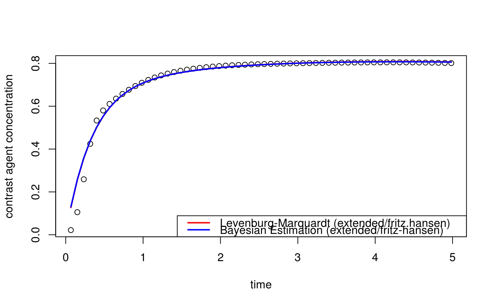

kineticModel.RdKinetic curves from single compartment models are computed from kinetic parameters.
kineticModel(time, par, model = "extended", aif = "fritz.hansen")| time | is a vector of acquisition times (in minutes). |
|---|---|
| par | is a list of kinetic parameters; e.g.,
|
| model | is a character string that identifies the type of compartmental model to be used. Acceptable models include: “weinmann” Tofts & Kermode AIF convolved with single compartment model “extended” (default) Weinmann model extended with additional vascular compartment, ... |
| aif | is a character string that identifies the type of arterial input
function (AIF) to be used. Acceptable AIF models include:
|
Computed pharmacokinetic curve.
Compartmental models are the solution to the modified general rate equation (Kety 1951). The specific parametric models considered here include the basic Kety model $$C_t(t)=K^{trans}\left[C_p(t)\otimes\exp(-k_{ep}t)\right],$$ where \(\otimes\) is the convolution operator, and the so-called extended Kety model $$C_t(t)=v_pC_p(t)+K^{trans}\left[C_p(t)\otimes\exp(-k_{ep}t)\right].$$ The arterial input function must be literature-based (with fixed parameters).
Fritz-Hansen, T., Rostrup, E., Larsson, H.B.W, Sondergaard, L., Ring, P. and Henriksen, O. (1993) Measurement of the arterial concentration of Gd-DTPA using MRI: A step toward quantitative perfusion imaging, Magnetic Resonance in Medicine, 36, 225-231.
Tofts, P.S., Brix, G, Buckley, D.L., Evelhoch, J.L., Henderson, E., Knopp, M.V., Larsson, H.B.W., Lee, T.-Y., Mayr, N.A., Parker, G.J.M., Port, R.E., Taylor, J. and Weiskoff, R. (1999) Estimating kinetic parameters from dynamic contrast-enhanced \(T_1\)-weighted MRI of a diffusable tracer: Standardized quantities and symbols, Journal of Magnetic Resonance, 10, 223-232.
Tofts, P.S. and Kermode, A.G. (1984) Measurement of the blood-brain barrier permeability and leakage space using dynamic MR imaging. 1. Fundamental concepts, Magnetic Resonance in Medicine, 17, 357-367.
Weinmann, H.J., Laniado, M. and Mutzel, W. (1984) Pharmacokinetics of Gd-DTPA/dimeglumine after intraveneous injection into healthy volunteers, Physiological Chemistry and Physics and Medical NMR, 16, 167-172.
Brandon Whitcher bwhitcher@gmail.com and Volker Schmid volkerschmid@users.sourceforge.net
data("buckley")
xi <- seq(5, 300, by=5)
img <- array(t(breast$data)[,xi], c(13,1,1,60))
mask <- array(TRUE, dim(img)[1:3])
time <- buckley$time.min[xi]
fit.lm <- dcemri.lm(img, time, mask, aif="fritz.hansen")
par.lm <- c("vp"=fit.lm$vp[3], "ktrans"=fit.lm$ktrans[3], "kep"=fit.lm$kep[3])
curve.lm <- kineticModel(time, par.lm)
plot(time, img[3,1,1,], xlab="time", ylab="contrast agent concentration")
lines(time, curve.lm, lwd=2, col=2)
fit.bayes <- dcemri.bayes(img, time, mask, aif="fritz.hansen")
par.bayes <- c("vp"=fit.bayes$vp[3], "ktrans"=fit.bayes$ktrans[3],
"kep"=fit.bayes$kep[3])
curve.bayes <- kineticModel(time, par.bayes)
lines(time, curve.bayes, lwd=2, col=4)
legend("bottomright", c("Levenburg-Marquardt (extended/fritz.hansen)",
"Bayesian Estimation (extended/fritz-hansen)"),
lwd=2, col=c(2,4))

cbind(time, img[3,,,], curve.lm, curve.bayes)[20:30,]
#> time curve.lm curve.bayes
#> [1,] 1.650000 0.775142 0.7662219 0.7659948
#> [2,] 1.733333 0.778938 0.7701721 0.7699190
#> [3,] 1.816667 0.782176 0.7737276 0.7734502
#> [4,] 1.900000 0.784939 0.7769461 0.7766458
#> [5,] 1.983333 0.787302 0.7798738 0.7795521
#> [6,] 2.066667 0.789326 0.7825480 0.7822059
#> [7,] 2.150000 0.791067 0.7849987 0.7846373
#> [8,] 2.233333 0.792571 0.7872505 0.7868706
#> [9,] 2.316667 0.793878 0.7893233 0.7889259
#> [10,] 2.400000 0.795021 0.7912340 0.7908197
#> [11,] 2.483333 0.796029 0.7929963 0.7925659